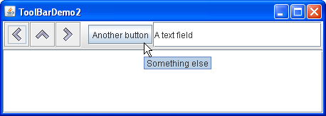

Lección: Usando Componentes Swing
Sección: Cómo Usar Varios Componentes
Cómo Usar Barras de Herramientas
Una JToolBar
es un contenedor que agrupa varios componentes ─ usualmente botones
con iconos ─ dentro de una fila o columna. A menudo, las barras de herramientas establecen un
acceso fácil a la funcionalidad que está también en los menús.
Cómo Usar Acciones describe cómo suministrar la misma funcionalidad en los
elementos de menú y los botones de la barra de herramientas.
Las siguientes imágenes muestran un aplicación llamada ToolBarDemo que contiene una barra de
herramientas sobre el área de texto. Pulse el botón Lanzar para ejecutar ToolBarDemo usando
Java™ Web Start (
descargue KDJ 7 o posterior).
Alternativamente, para compilarlo y ejecutarlo usted mismo, consulte el
índice de ejemplos.

Por defecto, el usuario puede arrastrar la barra de herramientas a otro borde de su contenedor o en una ventana propia. La siguiente figura muestra cómo se ve la aplicación después de que el usuario ha arrastrado la barra de herramientas al borde derecho de su contenedor.

Para que el comportamiento del arrastre funcione correctamente, la barra de herramientas debe estar en un
contenedor que use el gestor de diseño
BorderLayout. El componente
que afecta la barra de herramientas generalmente está en el centro del contenedor. La barra de herramientas
debe ser el único componente en el contenedor, y no debe estar en el centro.
La figura siguiente muestra cómo se ve la aplicación después de que el usuario ha arrastrado la barra de herramientas fuera de su ventana.

El siguiente código crea la barra de herramientas y la añade a un contenedor. Puede buscar el programa entero
en
ToolBarDemo.java.
public class ToolBarDemo extends JPanel
implements ActionListener {
...
public ToolBarDemo() {
super(new BorderLayout());
...
JToolBar toolBar = new JToolBar("Aún arrastrable");
addButtons(toolBar);
...
setPreferredSize(new Dimension(450, 130));
add(toolBar, BorderLayout.PAGE_START);
add(scrollPane, BorderLayout.CENTER);
}
...
}
Este código posiciona la barra de herramientas sobre el panel de desplazamiento colocando ambos componentes en
un panel controlado por un diseño de borde, con la barra de herramientas en la posición PAGE_START
y el panel de desplazamiento en la posición CENTER. Debido a que el panel de desplazamiento está
en el centro y no hay otros componentes excepto la barra de herramientas en el contenedor, por defecto la
barra de herramientas puede ser arrastrada a otros bordes del contenedor. La barra de herramientas puede
también ser arrastrada fuera en su propia ventana, en cuyo caso la ventana tiene el título "Aún arrastrable",
como se especificó el en constructor de JToolBar.
Crear Botones de Barra de Herramientas
Los botones en la barra de herramientas son instancias ordinarias de JButton que usan imágenes del
Repositorio del Aspecto Java . Use imágenes del
Repositorio de Aspecto Java si su
barra de herramientas tiene el Aspecto Java.
Aquí está el código que crea los botones y los añade a la barra de herramientas.
protected void addButtons(JToolBar toolBar) {
JButton button = null;
//primer botón
button = makeNavigationButton("Back24", PREVIOUS,
"Back to previous something-or-other",
"Previous");
toolBar.add(button);
//segundo botón
button = makeNavigationButton("Up24", UP,
"Up to something-or-other",
"Up");
toolBar.add(button);
...//código similar para crear y añadir el tercer botón...
}
protected JButton makeNavigationButton(String imageName,
String actionCommand,
String toolTipText,
String altText) {
//Buscamos la imagen.
String imgLocation = "images/"
+ imageName
+ ".gif";
URL imageURL = ToolBarDemo.class.getResource(imgLocation);
//Crea e inicializa el botón.
JButton button = new JButton();
button.setActionCommand(actionCommand);
button.setToolTipText(toolTipText);
button.addActionListener(this);
if (imageURL != null) { //imagen encontrada
button.setIcon(new ImageIcon(imageURL, altText));
} else { //imagen no encontrada
button.setText(altText);
System.err.println("Recurso no encontrado: " + imgLocation);
}
return button;
}
La primera llamada a makeNavigationButton crea la imagen para el primer botón, usando la imagen de
navegación 24x24 "Back" en el repositorio de gráficos.
Además de encontrar la imagen para el botón, el método makeNavigationButton también crea el botón,
establece las cadenas para su comando de acción y el texto de la tool tip, y añade el
oyente de acción para el botón. Si la imagen falta, el método imprime un mensaje de error y añade texto al
botón, así que el botón es aún utilizable.
Nota:
Si cualquiera de los botones en su barra de herramientas duplican la funcionalidad de otros componentes, tales como los elementos de menú, debería probablemente crear y añadir a la barra de herramientas botones como se describen en Cómo Usar Acciones.
Personalizar Barras de Herramientas
Añadiendo unas pocas líneas de código al ejemplo precedente, podemos demostrar algunas características de la barra de herramientas:
- Use
setFloatable(false)para hacer a la barra de herramientas inamovible. -
Use
setRollover(true)para destacar visualmente los botones de la barra de herramientas cuando el usuario pasa el cursor sobre ellos. - Agregue un separador a la barra de herramientas.
- Agregar un componente que-no-sea-un-botón a la barra de herramientas.
Puede ver estas características ejecutando ToolBarDemo2. Pulse el botón Lanzar para ejecutar ToolBarDemo2 usando Java™ Web Start ( descargue KDJ 7 o posterior). Alternativamente, para compilarlo y ejecutarlo usted mismo, consulte el índice de ejemplos.
Puede encontrar el código completo para este programa en
ToolBarDemo2.java. Debajo puede ver una foto de una nueva IU
(Interfaz de Usuario) usando estas características personalizadas.

Como la barra de herramientas ya no se puede arrastrar, ya no tiene la barrita rugosa en el borde izquierdo. Aquí está el código que apaga el arrastre:
toolBar.setFloatable(false);
La barra de herramientas está en modo de resaltado, de forma que el botón bajo el cursor tiene un indicador visual. La clase de indicador visual depende del aspecto. Por ejemplo, el aspecto Metal usa un efecto de gradiente para indicar el botón bajo el cursor mientras que otros tipos de aspecto usan bordes para este propósito. Aquí está el codigo que establece el modo de resaltado:
toolBar.setRollover(true);
Otra diferencia visible en el ejemplo de arriba es que la barra de herramientas contiene dos componentes nuevos, los cuales van precedidos por un espacio en blanco llamado separador. Aquí tiene el código que agrega el separador:
toolBar.addSeparator();
Aquí está el código que agrega los nuevos componentes:
//cuarto botón
button = new JButton("Another button");
...
toolBar.add(button);
//¡el quinto componentes NO es un botón!
JTextField textField = new JTextField("A text field");
...
toolBar.add(textField);
Puede hacer facilmente los componetes de la barra de herramientas o alineados arriba o alineados abajo en vez
de centrados invocando el método setAlignmentY. Por ejemplo, para alinear las partes superiores
de todos los componentes en una barra de herramientas, invoque setAlignmentY(TOP_ALIGNMENT) sobre
cada componente. De la misma forma, puede usar el método setAlignmentX para especificar el
alineamiento de los componentes cuando la barra de herramientas es vertical. Esta flexibilidad del diseño es
posible porque la barra de herramientass usa BoxLayout para posicionar sus componentes. Para más
información, ver
Cómo Usar BoxLayout.
La IPA de la Barra de Herramientas
La tabla siguiente lista los constructores y métodos comunmente usados de
JToolBar. Otros
métodos que podría llamar están listados en las tablas de la IPA en La Clase
JComponent.
| Método o Constructor | Propósito |
|---|---|
|
JToolBar()
JToolBar(int) JToolBar(String) JToolBar(String, int) |
Crea una barra de herramientas. El parámetro int opcional le permite especificar la orientación; que
por defecto es HORIZONTAL. El parámetro opcional String le permite
especificar el título de la ventana de la barra de herramientas si esta es arrastrada fuera de su
contenedor.
|
| Component add(Component) |
Añade un componente a la barra de herramientas.
Puede asociar un botón con una |
| void addSeparator() | Agrega un seperador al final de la barra de herramientas. |
|
void setFloatable(boolean)
boolean isFloatable() |
La propiedad floatable es true por defecto, e indica que el usuario puede arrastrar la barra de
herramientas afuera en una ventana separada. Para desactivar el arrastre de la barra de herramientas,
use toolBar.setFloatable(false). Algunos aspectos podrían ignorar esta propiedad.
|
|
void setRollover(boolean)
boolean isRollover() |
La propiedad rollover es false por defecto. Para hacer que los botones de la barra de herramientas se destaquen visualmente cuando el usuario pase sobre ellos con el cursor, establezca esta propiedad a true. Algunos tipos de aspectos podrían ignorar esta propiedad. |
Ejemplos que Usan Barras de Herramientas
Esta tabla lista ejemplos que usan JToolBar y señala en dónde son descritos esos ejemplos.
| Ejemplo | Dónde Se Describe | Notas |
|---|---|---|
ToolBarDemo |
Esta página | Una barra de herramientas básica con botones que muestran sólo un icono. |
ToolBarDemo2
|
Esta página | Demuestra una barra de herramientas no flotante en modo resaltado que contiene un separador y un componente distinto a un botón. |
ActionDemo |
Cómo Usar Acciones | Implementa una barra de herramientas usando objetos Action. |